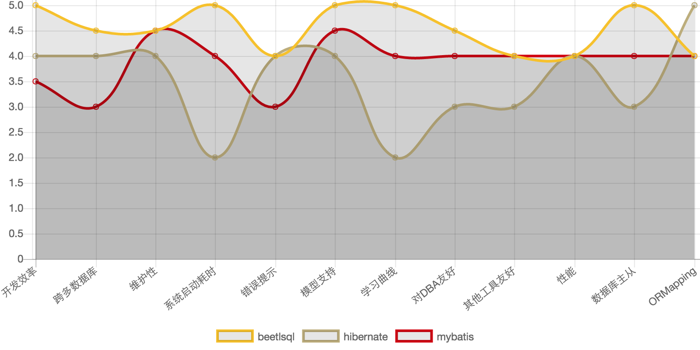

- 作者: 闲大赋,Gavin.King,Sue,Zhoupan,woate
- 社区 http://ibeetl.com
- qq群 219324263
- 当前版本 2.7.3 , 另外还需要beetl(http://git.oschina.net/xiandafu/beetl2.0/attach_files) 包
BeetlSQL中文文档1. beetlsql 特点2. 5分钟例子2.1. 安装2.2. 准备工作2.3. 代码例子2.4. SQL文件例子2.5. 代码&sql生成3. BeetlSQL 说明3.1. 获得SQLManager3.2. 查询API3.2.1. 模板类查询（自动生成sql）3.2.2. 通过sqlid查询,sql语句在md文件里3.3. 翻页查询API3.4. 更新API3.4.1. 自动生成sql3.4.2. 通过sqlid更新3.5. 直接执行SQL3.5.1. 直接执行sql模板语句3.5.2. 直接执行JDBC sql语句3.6. 其他3.6.1. 强制使用主或者从3.6.2. 生成Pojo代码和SQ片段4. 命名转化，表和列名映射5. 复合主键6. 使用Mapper7. BeetlSQL Annotation7.1. @AutoID 和 @AssignID ，@SeqID7.2. @Tail7.3. @ColumnIgnore7.4. @EnumMapping7.5. @Table7.6. @TableTemplate7.7. Mapper相关注解7.8. ORMQuery8. BeetlSQL 数据模型9. Markdown方式管理10. SQL 注释11. (重要) 配置beetlsql11.1. 开发模式和产品模式11.2. NameConversion11.3. 模板字符集11.4. 翻页起始参数是0还是111.5. 自定义方法和标签函数12. SQL 模板基于Beetl实现13. Beetl 入门13.1. 定界符号13.2. 变量13.3. 算数表达式13.4. 逻辑表达式13.5. 控制语句13.6. 访问变量属性13.7. 判断对象非空空13.8. 调用方法13.9. 自定义方法13.10. 内置方法13.11. 标签功能14. Debug功能15. 缓存功能16. Interceptor功能17. 内置支持主从数据库18. 可以支持更复杂的分库分表逻辑19. 跨数据库平台20. 代码生成20.1. 生成pojo 和 md文件20.2. 生成更多的代码21. 直接使用SQLResult22. Hibernate,MyBatis,MySQL 对比23. ORM23.1. sql语句里的ORM查询23.2. ORM 注解24. 集成和Demo24.1. Spring集成和Demo24.2. SpringBoot集成24.3. JFinal集成和Demo
BeetSql是一个全功能DAO工具， 同时具有Hibernate 优点 & Mybatis优点功能，适用于承认以SQL为中心，同时又需求工具能自动能生成大量常用的SQL的应用。
开发效率
维护性
其他
maven 方式:
1<dependency>2 <groupId>com.ibeetl</groupId>3 <artifactId>beetlsql</artifactId>4 <version>2.7.3</version>5</dependency>或者依次下载beetlsql，beetl 最新版本 包放到classpath里
为了快速尝试BeetlSQL，需要准备一个Mysql数据库或者其他任何beetlsql支持的数据库，然后执行如下sql脚本
1CREATE TABLE `user` (2 `id` int(11) NOT NULL AUTO_INCREMENT,3 `name` varchar(64) DEFAULT NULL,4 `age` int(4) DEFAULT NULL,5 `userName` varchar(64) DEFAULT NULL COMMENT '用户名称',6 `roleId` int(11) DEFAULT NULL COMMENT '用户角色',7 `date` datetime NULL DEFAULT NULL,8 PRIMARY KEY (`id`)9) ENGINE=InnoDB DEFAULT CHARSET=utf8;编写一个Pojo类，与数据库表对应（或者可以通过SQLManager的gen方法生成此类，参考一下节）
1import java.math.*;2import java.util.Date;34/*5*6* gen by beetlsql 2016-01-067*/8public class User {9 private Integer id ;10 private Integer age ;11 //用户角色12 private Integer roleId ;13 private String name ;14 //用户名称15 private String userName ;16 private Date date ;1718}写一个java的Main方法，内容如下
1ConnectionSource source = ConnectionSourceHelper.getSimple(driver, url, "", userName, password);2DBStyle mysql = new MySqlStyle();3// sql语句放在classpagth的/sql 目录下4SQLLoader loader = new ClasspathLoader("/sql");5// 数据库命名跟java命名一样，所以采用DefaultNameConversion，还有一个是UnderlinedNameConversion，下划线风格的6所以采用DefaultNameConversion nc = new 所以采用DefaultNameConversion();7// 最后，创建一个SQLManager,DebugInterceptor 不是必须的，但可以通过它查看sql执行情况8SQLManager sqlManager = new SQLManager(mysql,loader,source,nc,new Interceptor[]{new DebugInterceptor()});91011//使用内置的生成的sql 新增用户，如果需要获取主键，可以传入KeyHolder12User user = new User();13user.setAge(19);14user.setName("xiandafu");15sqlManager.insert(user);1617//使用内置sql查询用户18int id = 1;19user = sqlManager.unique(User.class,id);2021//模板更新,仅仅根据id更新值不为null的列22User newUser = new User();23newUser.setId(1);24newUser.setAge(20);25sqlManager.updateTemplateById(newUser);2627//模板查询28User query = new User();29query.setName("xiandafu");30List<User> list = sqlManager.template(query);313233//使用user.md 文件里的select语句，参考下一节。34User query2 = new User();35query.setName("xiandafu");36List<User> list2 = sqlManager.select("user.select",User.class,query2);通常一个项目还是有少量复杂sql，可能只有5，6行，也可能有上百行，放在单独的sql文件里更容易编写和维护，为了能执行上例的user.select,需要在classpath里建立一个sql目录（ClasspathLoader 配置成sql目录，参考上一节ClasspathLoader初始化的代码）以及下面的user.md 文件，内容如下
1select2===3select * from user where 1=14@if(!isEmpty(age)){5and age = #age#6@}7@if(!isEmpty(name)){8and name = #name#9@}关于如何写sql模板，会稍后章节说明，如下是一些简单说明。
sql模板采用beetl原因是因为beetl 语法类似js，且对模板渲染做了特定优化，相比于mybatis，更加容易掌握和功能强大，可读性更好，也容易在java和数据库之间迁移sql语句
User类并非需要自己写，好的实践是可以在项目中专门写个类用来辅助生成pojo和sql片段，代码如下
1public static void main(String[] args){2 SqlManager sqlManager = ...... //同上面的例子3 sqlManager.genPojoCodeToConsole("user");4 sqlManager.genSQLTemplateToConsole("user");5}注意:我经常在我的项目里写一个这样的辅助类，用来根据表或者视图生成各种代码和sql片段，以快速开发.
genPojoCodeToConsole 方法可以根据数据库表生成相应的Pojo代码，输出到控制台，开发者可以根据这些代码创建相应的类，如上例子，控制台将输出
1package com.test;2import java.math.*;3import java.util.Date;4import java.sql.Timestamp;56/*7*8* gen by beetlsql 2016-01-069*/10public class user {11 private Integer id ;12 private Integer age ;13 //用户角色14 private Integer roleId ;15 private String name ;16 //用户名称17 private String userName ;18 private Date date ;1920}上述生成的代码有些瑕疵，比如包名总是com.test，类名是小写开头（因为用了DefaultNameConversion)，你需要修改成你要的包名和正常的类名，pojo类也没有生成getter，setter方法，你需要用ide自带的工具再次生成一下。
注意
生成属性的时候，id总是在前面，后面依次是类型为Integer的类型，最后面是日期类型，剩下的按照字母排序放到中间。
一旦有了User 类，如果你需要些sql语句，那么genSQLTemplateToConsole 将是个很好的辅助方法，可以输出一系列sql语句片段，你同样可以赋值粘贴到代码或者sql模板文件里（user.md),如上例所述，当调用genSQLTemplateToConsole的时候，生成如下
1sample2===3* 注释45 select #use("cols")# from user where #use("condition")#67cols8===910 id,name,age,userName,roleId,date1112updateSample13===1415 `id`=#id#,`name`=#name#,`age`=#age#,`userName`=#userName#,`roleId`=#roleId#,`date`=#date#1617condition18===1920 1 = 121 @if(!isEmpty(name)){22 and `name`=#name#23 @}24 @if(!isEmpty(age)){25 and `age`=#age#26 @}beetlsql生成了用于查询，更新，条件的sql片段和一个简单例子。你可以按照你的需要copy到sql模板文件里.实际上，如果你熟悉gen方法，你可以直接gen代码和sql到你的工程里，甚至是整个数据库都可以调用genAll来一次生成
注意
sql 片段的生成顺序按照数据库表定义的顺序显示
SQLManager 是系统的核心，他提供了所有的dao方法。获得SQLManager，可以直接构造SQLManager.并通过过单例获取如：
1ConnectionSource source = ConnectionSourceHelper.getSimple(driver, url, "", userName, password);2DBStyle mysql = new MySqlStyle();3// sql语句放在classpagth的/sql 目录下4SQLLoader loader = new ClasspathLoader("/sql");5// 数据库命名跟java命名一样，所以采用DefaultNameConversion，还有一个是UnderlinedNameConversion，下划线风格的6UnderlinedNameConversion nc = new UnderlinedNameConversion();7// 最后，创建一个SQLManager,DebugInterceptor 不是必须的，但可以通过它查看sql执行情况8SQLManager sqlManager = new SQLManager(mysql,loader,source,nc,new Interceptor[]{new DebugInterceptor()});更常见的是，已经有了DataSource，创建ConnectionSource 可以采用如下代码
1ConnectionSource source = ConnectionSourceHelper.single(datasource);如果是主从Datasource
1ConnectionSource source = ConnectionSourceHelper.getMasterSlave(master,slaves)翻页的start，系统默认位从1开始，为了兼容各个数据库系统，会自动翻译成数据库习俗，比如start为1，会认为mysql，postgres从0开始（从start－1开始），oralce从1开始（start－0）开始。
然而，如果你只用特定数据库，可以按照特定数据库习俗来，比如，你只用mysql，start为0代表起始纪录，需要配置
1OFFSET_START_ZERO = true这样，翻页参数start传入0即可。
注意:根据模板查询并不包含时间字段，也不包含排序，然而，可以通过在pojo class上使用@TableTemplate() 或者日期字段的getter方法上使用@DateTemplate()来定制，如下:
1("order by id desc ")2public class User {3 private Integer id ;4 private Integer age ;5 // ...6 (accept="minDate,maxDate")7 public Date getDate() {8 return date;9 }10}这样，模板查询将添加order by id desc ,以及date字段将按照日期范围来查询。 具体参考annotation一章
BeetlSQL 提供一个PageQUery对象,用于web应用的翻页查询,BeetlSql假定有sqlId 和sqlId$count,俩个sqlId,并用这来个来翻页和查询结果总数.如:
1queryNewUser2===3select * from user order by id desc ;45queryNewUser$count6===7select count(1) from user对于俩个相似的sql语句,你可以使用use函数,把公共部分提炼出来.
大部分情况下,都不需要2个sql来完成,一个sql也可以,要求使用page函数或者pageTag标签,这样才能同时获得查询结果集总数和当前查询的结果
1queryNewUser2===3select4@pageTag(){5a.*,b.name role_name6@}7from user a left join b ...如上sql,会在查询的时候转为俩条sql语句
1select count(1) from user a left join b...2select a.*,b.name role_name from user a left join b...如果字段较多,为了输出方便,也可以使用pageTag,字段较少,用page函数也可以. ,具体参考pageTag和page函数说明.翻页代码如下
1//从第一页开始查询,无参数2PageQuery query = new PageQuery();3sql.pageQuery("user.queryNewUser", User.class,query);4System.out.println(query.getTotalPage());5System.out.println(query.getTotalRow());6System.out.println(query.getPageNumber());7List<User> list = query.getList();PageQuery 对象也提供了 orderBy属性，用于数据库排序，如 "id desc"
跨数据库支持
如果你打算使用PageQuery做翻页,且只想提供一个sql语句+page函数,那考虑到垮数据库,应该不要在这个sql语句里包含排序,因为大部分数据库都不支持. page函数生成的查询总数sql语句,因为包含了oder by,在大部分数据库都是会报错的的,比如:select count(1) form user order by name,在sqlserver,mysql,postgres都会出错,oracle允许这种情况, 因此,如果你要使用一条sql语句+page函数,建议排序用PageQuery对象里有排序属性oderBy,可用于排序,而不是放在sql语句里.
如果你不打算使用PageQuery+一条sql的方式,而是用俩条sql来分别翻页查询和统计总数,那无所谓
或者你直接使用select 带有起始和读取总数的接口,也没有关系,可以在sql语句里包含排序
1List<User> list = sqlManager.execute(new SQLReady("select * from user where name=? and age = ?","xiandafu",18),User.class);) 1String md5 = sql.executeOnConnection(new OnConnection<String>(){2 3 public String call(Connection conn) throws SQLException {4 CallableStatement cstmt = conn.prepareCall("{ ? = call md5( ? ) }");5 // 其他代码6 return true;7 }8});
用于开发阶段根据表名来生成pojo代码和相应的sql文件
1sql.genAll("com.test", new GenConfig(), new GenFilter(){2 public boolean accept(String tableName){3 if(tableName.equalsIgnoreCase("user")){4 return true;5 }else{6 return false;7 }8 // return false9 }10});第一个参数是pojo类包名，GenConfig是生成pojo的配置，GenFilter 是过滤，返回true的才会生成。如果GenFilter为null，则数据库所有表都要生成
警告
必须当心覆盖你掉你原来写好的类和方法，不要轻易使用genAll，如果你用了，最好立刻将其注释掉，或者在genFilter写一些逻辑保证不会生成所有的代码好sql模板文件
Beetlsql 默认提供了三种列明和属性名的映射类。
1public class DefaultNameConversion extends NameConversion {23 4 public String getTableName(Class<?> c) {5 Table table = (Table)c.getAnnotation(Table.class);6 if(table!=null){7 return table.name();8 }9 return c.getSimpleName();10 }1112 13 public String getColName(Class<?> c, String attrName) {14 return attrName;15 }1617 18 public String getPropertyName(Class<?> c, String colName) {19 return colName;20 }2122}如果有特殊的表并不符合DefaultNameConversion实现方式，你可以重新实现上面的三个方法
beetlsql 支持复合主键，无需像其他dao工具那样创建一个特别的主键对象，主键对象就是实体对象本生
1CREATE TABLE `party` (2 `id1` int(11) NOT NULL,3 `id2` int(11) NOT NULL,4 `name` varchar(45) DEFAULT NULL,5 PRIMARY KEY (`id1`,`id2`)6) ENGINE=InnoDB DEFAULT CHARSET=latin1;Party代码如下
1public class Party {2 private Integer id1 ;3 private Integer id2 ;4 private String name ;5 //忽略其他 getter setter方法6}根据主键获取Party
1Party key = new Party();2key.setId1(1);3key.setId2(2);4Party party = sql.unique(Party.class, key);SQLManager 提供了所有需要知道的API，但通过sqlid来访问sql有时候还是很麻烦，因为需要手敲字符串，另外参数不是map就是para，对代码理解没有好处，BeetlSql支持Mapper，将sql文件映射到一个interface。如下示例
1public interface UserDao extends BaseMapper<User> {2 // 使用"user.getCount"语句,无参数3 public int getCount();4 //使用"user.setUserStatus" 语句5 public void setUserStatus(Map paras); //更新用户状态6 public void setUserAnnotherStatus(User user); //更新用户状态7 //使用"user.findById", 传入参数id8 public User findById(("id") Integer id);9 //or 使用params，一一对应10 (params="id,status")11 public User findByIdAndStatus( Integer id,Integer status);12 //翻页查询，使用"user.queryNewUser"13 public void queryNewUser(PageQuery query) ;14 // 使用_st,_sz 翻页15 (params="name,age,_st,_sz")16 public List<User> queryUser( String name, Integer age,int start, int size);17 //使用sqlready18 (value=" update user set age = ? where id = ? ")19 public void updateAge(int age,int id);2021 (value=" select name from user",returnType=String.class)22 public List<String> allNames();2324} 1public void setUserStatus(Map paras,("name") String name);2}方法如果是查询语句，可以使用@RowStart，@RowSize 作为翻页参数，BeetlSQL将自动完成翻页功能
注意 BeetlSQL 会根据 对应的方法对应的SQL语句，解析开头，如果是select开头，就认为是select操作，同理还有update，delete，insert。如果sql 模板不是以这些关键字开头，则需要使用注解 @SqlStatement
1(type=SqlStatementType.INSERT)2public KeyHolder newUser(User user);// 添加用户SqlStatement 也可在params申明参数名称
1public List<User> queryUser(("name") String name,("age") Integer age, int start, int size);2// or3(params="name,age,_st,_se")4public List<User> queryUser(String name,Integer age,int start,int size);Mapper 也支持使用JDBC SQL，这时候需要采用Sql注解
1(value=" update user set age = ? where id = ? ")2public void updateAge(int age,int id);3("select * from user ")4public List<User> selectAll();使用Mapper能增加Dao维护性，并能提高开发效率，建议在项目中使用。
对于自动生成的sql，默认不需要任何annotaton，类名对应于表名（通过NameConverstion类），getter方法的属性名对应于列明（也是通过NameConverstion类），但有些情况还是需要anntation。
1()2public Long getId() {3 return id;4}代码设定主键允许像@AssignID 传入id的生成策略以自动生成序列，beetl默认提供了一个snowflake算法，一个用于分布式环境的id生成器(https://github.com/twitter/snowflake)
1("simple")2public Long getId() {3 return id;4}simple 是beetlsql提供的一个默认的snowflake实现，你可以通过sqlManager自己注册id生成器
1sqlManager.addIdAutonGen("uuid2", new IDAutoGen(){2 3 public Object nextID(String params) {4 return "hi"+new Random().nextInt(10000);5 }6}); 1("uuid2")2public Long getId() {3 return id;4}对于属性名为id的自增主键，不需要加annotation，beetlsql默认就是@AutoID
备注
- 对于支持多种数据库的，这些annotation可以叠加在一起
@Tail作用于类上，表示该对象是混合模型，参考下一章混合模型,sql查询无法在pojo映射的列或者结果集将使用Tail指定的方法
在beetlsql 内置的insert或者update方法的时候，使用此注解的字段（作用于getter方法）将根据注解的属性来决定是否忽略此字段
1(insert=true,update=false)2public Date getBir(){3 return bir;4}如上例子，插入的时候忽略bir属性（往往是因为数据库指定了默认值为当前时间），更新的时候不能忽略 @ColumnIgnore的insert默认是true，update是false，因此也可以直接用 @ColumnIgnore()
对于Entity使用了枚举作为属性值，可以再枚举类上定义EnumMapping，指出如何将枚举与数据库值互相转化，有四种方法
1("value")2public enum Color {3 RED("RED",1),BLUE ("BLUE",2);4 private String name;5 private int value;6 private Color(String name, int value) {7 this.name = name;8 this.value = value;9 }10 public String getName() {11 return name;12 }13 public void setName(String name) {14 this.name = name;15 }16 public int getValue() {17 return value;18 }19 public void setValue(int value) {20 this.value = value;21 }2223}beetlsq 会获取枚举的value属性（调用getValue)来获取枚举属性值
标签 @Table(name="xxxx") 告诉beetlsql，此类对应xxxx表。比如数据库有User表，User类对应于User表，也可以创建一个UserQuery对象，也对应于User表
1(name="user")2public class QueryUser ..注：可以为对象指定一个数据库shcema，如name="cms.user",此时将访问cms库（或者cms用户，对不同的数据库，称谓不一样）下的user数据表
1(accept="minDate,maxDate",compare=">=,<")2 public Date getDate() {3}在模板查询的时候，将会翻译成
1@if(!isEmpty(minDate)){2 and date>=#minDate#3@}4@if(!isEmpty(maxDate)){5 and date<#maxDate#6@}注意
minDate,maxDate 是俩个额外的变量,需要定义到pojo类里，DateTemplate也可以有默认值，如果@DateTemplate()，相当于@DateTemplate(accept="min日期字段,max日期字段",compare=">=,<")
Mapper 是将sql模板文件映射成一个具体的Dao方法类,这样方位代码开发和维护
Mapper中的注解，包括常用的 SqlStatement ，SqlStatementType ，Sql,Param 还有不常用的 RowSize ，RowStart，具体参考Mapper
beetlsql 支持在实体类上增加ORMQuery注解,这样对于实体的查询,会触发懒加载,从而实现ORM 查询功能,具体参考ORM 查询一章
BeetlSQL是一个全功能DAO工具，支持的模型也很全面，包括
1List<Map<String,Object>> list = sqlManager.select("user.find",Map.class,paras); 1/*混合模型*/2public User extends TailBean{3 private int id ;4 private String name;5 private int roleId;6 /*以下是getter和setter 方法*/7}对于sql语句:
1selectUser2===3select u.*,r.name r_name from user u left join role r on u.roleId=r.id .....执行查询的时候
1List<User> list = sqlManager.select("user.selectUser",User.class,paras);2for(User user:list){3 System.out.println(user.getId());4 System.out.println(user.get("rName"));5}程序可以通过get方法获取到未被映射到pojo的值，也可以在模板里直接 ${user.rName} 显示（对于大多数模板引擎都支持）
另外一种更自由的实现混合模型的方法是在目标Pojo上采用注解@Tail，如果注解不带参数，则默认会调用set(String,Object) 方法来放置额外的查询属性，否则，依据注解的set参数来确定调用方法
1(set="addValue")2public class User {3 private Integer id ;4 private Integer age ;5 public User addValue(String str,Object ok){6 ext.put(str, ok);7 return this;8 }BeetlSQL集中管理SQL语句，SQL 可以按照业务逻辑放到一个文件里，文件名的扩展名是md或者sql。如User对象放到user.md 或者 user.sql里，文件可以按照模块逻辑放到一个目录下。文件格式抛弃了XML格式，采用了Markdown，原因是
目前SQL文件格式非常简单，仅仅是sqlId 和sql语句本身，如下
1文件一些说明，放在头部可有可无，如果有说明，可以是任意文字2SQL标示3===4以*开头的注释5SQL语句67SQL标示28===9SQL语句 2所有SQL文件建议放到一个sql目录，sql目录有多个子目录，表示数据库类型，这是公共SQL语句放到sql目录下，特定数据库的sql语句放到各自自目录下 当程序获取SQL语句得时候，先会根据数据库找特定数据库下的sql语句，如果未找到，会寻找sql下的。如下代码
1List<User> list = sqlManager.select("user.select",User.class);SqlManager 会根据当前使用的数据库，先找sql/mysql/user.md 文件，确认是否有select语句，如果没有，则会寻找sql/user.md
注
- 注释是以* 开头，注释语句不作为sql语句
- 默认的ClasspathLoader采用了这种方法，你可以实现SQLLoader来实现自己的格式和sql存储方式，如数据库存储
对于采用Markdown方式，可以采用多种方式对sql注释。
1select * from user where2-- status 代表状态3statu = 1 1select * from user where2@ /* 这些sql语句被注释掉3statu = 14@ */ 1selectByUser2==3* 这个sql语句用来查询用户的4* status =1 表示查找有效用户56select * from user where status = 1beetlsql 配置文件是 btsql-ext.properties，位于classpath 根目录下，如果没有此文件，beetlsql将使用系统默认配置，如 * 是开发模式，beetlsql每次运行sql都会检测sql文件是否变化，并重新加载 * 字符集，是系统默认的字符集 * 翻页默认总是从1开始，对于oralce数据库来说，翻页起始参数正合适。对于mysql其他数据库来说，beetlsql，翻页参数变成n-1.一般你不需要关心
beetlsql默认是开发模式，因此修改md的sql文件，不需要重启。但建议线上不要使用开发模式，因为此模式会每次sql调用都会检测md文件是否变化。可以通过修改/btsql-ext.properties ,修改如下属性改为产品模式
1PRODUCT_MODE = true数据库字段名与java属性名的映射关系必须配置正确，否则会导致各种问题，如下是一些建议
字段名字是user_id, java属性名是userId, 则使用UnderlinedNameConversion 字段名是userId, java属性名是userId，则使用DefaultNameConversion
如果是其他映射关系，可以考虑自己实现NameConversion接口
默认sql模板文件采用的是系统默认字符集，可以更改配置采用指定的字符集
1CHARSET = UTF-8默认认为1对应于翻页的第一条记录，如果你习惯mysql 那种0对应于第一条记录，则需要配置OFFSET_START_ZERO，设置为true
1OFFSET_START_ZERO = true无论是从0开始还是从开始，都不影响beetlsql根据特定数据库翻译成目标数据库的sql语句，这只是一个个人习惯，如系统只有mysql数据库 那从0开始，比较符合mysql的习惯。
可以在sql模板中使用自定义方法和标签函数，具体请参考beetl使用说明，如下是默认配置
1FN.use = org.beetl.sql.core.engine.UseFunction2FN.globalUse = org.beetl.sql.core.engine.GlobalUseFunction3FN.text = org.beetl.sql.core.engine.TextFunction4FN.join = org.beetl.sql.ext.JoinFunction5FN.isEmpty=org.beetl.sql.ext.EmptyExpressionFunction6FN.page=org.beetl.sql.core.engine.PageQueryFuntion7TAG.trim= org.beetl.sql.core.engine.TrimTag8TAG.pageTag= org.beetl.sql.core.engine.PageQueryTagEmptyExpressionFunction 用在很多地方,如template 类操作,where语句里的条件判断,它 沿用了beetl习惯,对于不存在的变量,或者为null的变量,都返回true,同时如果是字符串,为空字符串也返回true,数组,集合也是这样,有些项目,认为空字符串应该算有值而不应该返回true,你可以参考EmptyExpressionFunction的实现,按照项目语义来定义isEmpty
SQL语句可以动态生成，基于Beetl语言，这是因为
1selectByCond2===3select * from user where 1=14--:if(age!=null)5age=#age#6--:}如果不了解beetl，可先自己尝试按照js语法来写sql模板，如果还有疑问，可以查阅官网 http://ibeetl.com
Beetl 语法类似js，java，如下做简要说明，使用可以参考 http://ibeetl.com , 或者在线体验 http://ibeetl.com:8080/beetlonline/
默认的定界符号是@ 和 回车。 里面可以放控制语句，表达式等语，，站位符号是##,站位符号默认是输出？，并在执行sql的传入对应的值。如果想在占位符号输出变量值，则需要使用text函数
1@if(!isEmpty(name)){2 and name = #name#3}如果想修改定界符，可以增加一个/btsql-ext.properties. 设置如下属性
1DELIMITER_PLACEHOLDER_START=#2DELIMITER_PLACEHOLDER_END=#3DELIMITER_STATEMENT_START=@4DELIMITER_STATEMENT_END=beetlsql 的其他属性也可以在此文件里设置
通过程序传入的变量叫全局变量，可以在sql模板里使用，也可以定义变量，如
1@var count = 3;2@var status = {"a":1} //json变量同js，如a+1-b%30, i++ 等
1select * from user where name like #'%'+name+'%'#有“&&” “||” ，还有 “！”，分别表示与，或，非， beetl也支持三元表达式
1#user.gender==1?'女':'男'# 1select * from user where status in (2@for(id in ids){3#id# #text(idLP.last?"":"," )#4@}注意
- 变量名＋LP 是一个内置变量，包含了循环状态，具体请参考beetl文档，text方法表示直接输出文本而不是符号“？”
- 关于 sql中的in，可以使用内置的join方法更加方便
1public class Constatns{2 public static int RUNNING = 0;3 public static User getUser(){}4}直接以java方式访问，需要再变量符号前加上@，可以在模板里访问
1select * from user where status = #@Constatns.RUNNING# and id = #@Constatns.getUser().getId()#注意，如果Constants 类 没有导入进beetl，则需要带包名，导入beetl方法是配置IMPORT_PACKAGE=包名.;包名.
可以采用isEmpty判断变量表达式是否为空(为null)，是否存在，如果是字符串，是否是空字符串，如
1if(isEmpty(user)||isEmpty(role.name))也可以用传统方法判断，如
1if(user==null) or if(role.name!=null))变量有可能不存在，可用hasH函数或者需要使用安全输出符号，如
1if(null==user.name!))2//or3if(has(user))变量表达式后面跟上"!" 表示如果变量不存在，则为！后面的值，如果！后面没有值，则为null
同js，唯一值得注意的是，在占位符里调用text方法，会直接输出变量而不是“？”，其他以db开头的方式也是这样。架构师可以设置SQLPlaceholderST.textFunList.add(xxxx) 来决定那些方法在占位符号里可以直接输出文本而不是符号"?"
beetl提供了很多内置方法，如print，debug,isEmpty,date等，具体请参考文档
通过配置btsql-ext.properties, 可以注册自己定义的方法在beetlsql里使用，如注册一个返回当前年份的函数，可以在btsql-ext.properties加如下代码
1FN.db.year= com.xxx.YearFunction这样在模板里,可以调用db.year() 获得当前年份。YearFunction 需要实现Function的 call方法，如下是个简单代码
1public class YearFunction implements Function{2 public String call(Object[] paras, Context ctx){3 return "2015";4 }5}关于如何完成自定义方法，请参考 ibeetl 官方文档
1select * from user where status in ( #join(ids)＃)2 -- 输出成 select * from user where status in (?,?,?) 1condtion2===3where 1=1 and name = #name#45selectUser6===7select * from user #use("condition")#globalUse 参数是其他文件的globalUse，如globalUse("share.accessControl"),将访问share.md(sql)文件的accessControl片段
1queryNewUser2===3select #page()# from user如果无参数,则在查询的时候解释成 *,如果有参数,则解释成列名,如 page("a.name,a.id,b.name role_name") ,如果列名较多,可以使用pageTag
1updateStatus2===34update user set5@trim(){6@if(!isEmpty(age){7age = #age# ,8@} if(!isEmpty(status){9status = #status#,10@}11@}12where id = #id#trim 标签可以删除 标签体里的最后一个逗号.trim 也可以实现类似mybatis的功能，通过传入trim参数prefix，prefixOverrides来完成。具体参考标签api 文档
1queryNewUser2===3select4@pageTag(){5id,name,status6@}7from user注:可以参考beetl官网 了解如何开发自定义标签以及注册标签函数
Debug 期望能在控制台或者日志系统输出执行的sql语句，参数，执行结果以及执行时间，可以采用系统内置的DebugInterceptor 来完成，在构造SQLManager的时候，传入即可
1SqlManager sqlManager = new SqlManager(source,mysql,loader,nc ,new Interceptor[]{new DebugInterceptor() });或者通过spring，jfianl这样框架配置完成。使用后，执行beetlsql，会有类似输出
1┏━━━━━ Debug [user.selectUserAndDepartment] ━━━2┣ SQL： select * from user where 1 = 13┣ 参数： []4┣ 位置： org.beetl.sql.test.QuickTest.main(QuickTest.java:47)5┣ 时间： 23ms6┣ 结果： [3]7┗━━━━━ Debug [user.selectUserAndDepartment] ━━━beetlsql会分别输出 执行前的sql和参数，以及执行后的结果和耗费的时间。你可以参考DebugInterceptor 实现自己的调试输出
同DebugInterceptor构造方式一样， SimpleCacheInterceptor能缓存指定的sql查询结果
1List<String> lcs = new ArrayList<String>();2lcs.add("user");3SimpleCacheInterceptor cache =new SimpleCacheInterceptor(lcs);4Interceptor[] inters = new Interceptor[]{ new DebugInterceptor(),cache};5SQLManager sql = new SQLManager(style,loader,cs,new UnderlinedNameConversion(), inters);6for(int i=0;i<2;i++){7 sql.select("user.queryUser", User.class, null);8}如上例子，指定所有namespace为user查询都讲被缓存，如果此namepace有更新操作，则缓存清除，输出如下
1┏━━━━━ Debug [user.queryUser] ━━━2┣ SQL： select * from User where 1 =13┣ 参数： []4┣ 位置： org.beetl.sql.test.QuickTest.main(QuickTest.java:54)5┣ 时间： 52ms6┣ 结果： [9]7┗━━━━━ Debug [user.queryUser] ━━━89┏━━━━━ Debug [user.queryUser] ━━━10┣ SQL： select * from User where 1 =111┣ 参数： []12┣ 位置： org.beetl.sql.test.QuickTest.main(QuickTest.java:54)13┣ 时间： 0ms14┣ 结果： [9]15┗━━━━━ Debug [user.queryUser] ━━━第二条查询的时间为0，这是因为直接使用了缓存缘故。
SimpleCacheInterceptor 构造的时候接受一个类列表，所有sqlid的namespace，比如“user.queryUser” 的namespace是“user”，如果beetlsql的查询sqlid此列表里，将参与缓存处理，否则，不参与缓存处理
默认的缓存实现是使用内存Map，也可以使用其他实现方式，比如redies，只需要实现如下接口
1public static interface CacheManager{2 public void initCache(String ns);3 public void putCache(String ns,Object key,Object value);4 public Object getCache(String ns,Object key);5 public void clearCache(String ns);6 public boolean containCache(String ns,Object key);7}BeetlSql可以在执行sql前后执行一系列的Intercetor，从而有机会执行各种扩展和监控，这比已知的通过数据库连接池做Interceptor更加容易。如下Interceptor都是有可能的
你也可以自行扩展Interceptor类，来完成特定需求。 如下，在执行数据库操作前会执行befor，通过ctx可以获取执行的上下文参数，数据库成功执行后，会执行after方法
1public interface Interceptor {2 public void before(InterceptorContext ctx);3 public void after(InterceptorContext ctx);4}InterceptorContext 如下，包含了sqlId，实际得sql，和实际得参数, 也包括执行结果result。对于查询，执行结果是查询返回的结果集条数，对于更新，返回的是成功条数，如果是批量更新，则是一个数组。可以参考源码DebugInterceptor
1public class InterceptorContext {2 private String sqlId;3 private String sql;4 private List<Object> paras;5 private boolean isUpdate = false ;6 private Object result ;7 private Map<String,Object> env = null;8}BeetlSql管理数据源，如果只提供一个数据源，则认为读写均操作此数据源，如果提供多个，则默认第一个为写库，其他为读库。用户在开发代码的时候，无需关心操作的是哪个数据库，因为调用sqlScrip 的 select相关api的时候，总是去读取从库，add/update/delete 的时候，总是读取主库。
1sqlManager.insert(User.class,user) // 操作主库，如果只配置了一个数据源，则无所谓主从2sqlManager.unique(id,User.class) //读取从库主从库的逻辑是由ConnectionSource来决定的，如下DefaultConnectionSource 的逻辑
1public Connection getConn(String sqlId,boolean isUpdate,String sql,List<?> paras){3 if(this.slaves==null||this.slaves.length==0) return this.getWriteConn(sqlId,sql,paras);4 if(isUpdate) return this.getWriteConn(sqlId,sql,paras);5 int status = forceStatus.get();6 if(status ==0||status==1){7 return this.getReadConn(sqlId, sql, paras);8 }else{9 return this.getWriteConn(sqlId,sql,paras);10 }11}对于于不同的ConnectionSource 完成逻辑不一样，对于spring，jfinal这样的框架，如果sqlManager在事务环境里，总是操作主数据库，如果是只读事务环境 则操作从数据库。如果没有事务环境，则根据sql是查询还是更新来决定。
如下是SpringConnectionSource 提供的主从逻辑
1public Connection getConn(String sqlId,boolean isUpdate,String sql,List paras){2 //只有一个数据源3 if(this.slaves==null||this.slaves.length==0) return this.getWriteConn(sqlId,sql,paras);4 //如果是更新语句，也得走master5 if(isUpdate) return this.getWriteConn(sqlId,sql,paras);6 //如果api强制使用7 int status = forceStatus.get();8 if(status==1){9 return this.getReadConn(sqlId, sql, paras);10 }else if(status ==2){11 return this.getWriteConn(sqlId,sql,paras);12 }13 //在事物里都用master，除了readonly事物14 boolean inTrans = TransactionSynchronizationManager.isActualTransactionActive();15 if(inTrans){16 boolean isReadOnly = TransactionSynchronizationManager.isCurrentTransactionReadOnly();17 if(!isReadOnly){18 return this.getWriteConn(sqlId,sql,paras);19 }20 }21 return this.getReadConn(sqlId, sql, paras);22}注意，对于使用者来说，无需关心本节说的内容，仅仅供要定制主从逻辑的架构师。
开发者也可以通过在Sql 模板里完成分表逻辑而对使用者透明，如下sql语句
1insert into2#text("log_"+ getMonth(date())#3values () ...注：text函数直接输出表达式到sql语句，而不是输出？。
log表示按照一定规则分表，table可以根据输入的时间去确定是哪个表
1select * from2#text("log"+log.date)#3where注意
text函数直接输出表达式到sql语句，而不是输出？。
同样，根据输入条件决定去哪个表，或者查询所有表
1@ var tables = getLogTables();2@ for(table in tables){3select * from #text(table)#4@ if(!tableLP.isLast) print("union");5@}6where name = #name#如前所述，BeetlSql 可以通过sql文件的管理和搜索来支持跨数据库开发，如前所述，先搜索特定数据库，然后再查找common。另外BeetlSql也提供了一些夸数据库解决方案
beetsql支持调用SQLManager.gen… 方法生成表对应的pojo类，如：
1SQLManager sqlManager = new SQLManager(style,loader,cs,new DefaultNameConversion(), new Interceptor[]{new DebugInterceptor()});2//sql.genPojoCodeToConsole("userRole"); 快速生成，显示到控制台3// 或者直接生成java文件4GenConfig config = new GenConfig();5config.preferBigDecimal(true);6config.setBaseClass("com.test.User");7sqlManager.genPojoCode("UserRole","com.test",config);config 类用来配置生成喜爱,目前支持生成pojo是否继承某个基类, 是否用BigDecimal代替Double,是否采用Date而不是Timestamp来表示日期，是否是直接输出到控制台而不是文件等 生成的代码如下：
1package com.test;2import java.math.*;3import java.sql.*;4public class UserRole extends com.test.User{5 private Integer id;67 /* 数据库注释 */8 private String userName;9}也可以自己设定输出模版，通过GenConfig.initTemplate(String classPath),指定模版文件在classpath 的路径，或者直接设置一个字符串模版 GenConfig.initStringTemplate. 系统默认的模版如下：
1package ${package};2${imports}3/*4* ${comment}5* gen by beetsql ${date(),"yyyy-MM-dd"}6*/7public class ${className} ${!isEmpty(ext)?"extends "+ext} {8 (attr in attrs){9 if(!isEmpty(attr.comment)){10 //${attr.comment}11 }12 private ${attr.type} ${attr.name} ;13 }1415}如果你需要给beetl模板注册函数等扩展，可以在生成sqlManager.genPojoCode之前，先注册扩展函数
1SourceGen.gt.registerFunction("xxx",yourFunction)这样就可以再代码模板里使用扩展函数了
可以实现MapperCodeGen的genCode接口，然后添加到 GenConfig里，这样再生成代码后，也会调用自定义的MapperCodeGen来生成更多代码。如系统内置的生成Mapper的代码
1MapperCodeGen mapper = new MapperCodeGen("com.dao");2config.codeGens.add(mapper);3sql.genPojoCodeToConsole("user", config);这样，除了生成pojo代码外，还生成mapper代码，内置的mapper代码实现如下，供参考
1public class MapperCodeGen implements CodeGen {2 String pkg = null;3 public MapperCodeGen(){45 }6 public MapperCodeGen(String pkg){7 this.pkg = pkg;8 }9 public static String mapperTemplate="";10 static {11 mapperTemplate = GenConfig.getTemplate("/org/beetl/sql/ext/gen/mapper.btl");12 }1314 15 public void genCode(String entityPkg, String entityClass, TableDesc tableDesc,GenConfig config,boolean isDisplay) {16 if(pkg==null){17 pkg = entityPkg;18 }19 Template template = SourceGen.gt.getTemplate(mapperTemplate);20 String mapperClass = entityClass+"Dao";21 template.binding("className", mapperClass);22 template.binding("package",pkg);23 template.binding("entityClass", entityClass);2425 String mapperHead = "import "+entityPkg+".*;"+SourceGen.CR;26 template.binding("imports", mapperHead);27 String mapperCode = template.render();28 if(isDisplay){29 System.out.println();30 System.out.println(mapperCode);31 }else{32 try {33 SourceGen.saveSourceFile(GenKit.getJavaSRCPath(), pkg, mapperClass, mapperCode);34 } catch (IOException e) {35 throw new RuntimeException("mapper代码生成失败",e);36 }37 }383940 }4142}有时候，也许你只需要SQL及其参数列表，然后传给你自己的dao工具类，这时候你需要SQLResult，它包含了你需要的sql，和sql参数。 SQLManager 有如下方法，你需要传入sqlid，和参数即可
1public SQLResult getSQLResult(String id, Map<String, Object> paras)paras 是一个map，如果你只有一个pojo作为参数，你可以使用“root” 作为key，这样sql模版找不到名称对应的属性值的时候，会寻找root 对象，如果存在，则取其同名属性。
SQLResult 如下：
1public class SQLResult {2 public String jdbcSql;3 public List<Object> jdbcPara;4}jdbcSql是渲染过后的sql，jdbcPara 是对应的参数值
http://ibeetl.com/community/?/article/63 提供了12项对比并给与评分。在犹豫使用BeetlSQL，可以参考这个全面的对比文章

注意
- BeetlSql的Pojo类与数据库表对应，没有关系映射相关特性，除非Pojo实现@Tail 或者继承TailBean（或者实现Tail接口），额外的关系映射才会放到tail属性里供查询的时候调用。
- 要注意的是，beetlsql的orm 仅仅限于查询结果集，而不包括新增，更新，删除。这些需要调用sqlManager的api直接操作就行了而不像JPA那样还需要成为容器管理对象才能更新
- 无论是sql语句里配置orm查询,还是通过注解来配置orm查询,都不强求数据库一定有此映射关系,只要当运行调用的时候才会触发orm查询.对于eager查询,当调用beetlsql的时候,会触发ORM查询,对于lazy查询,并不会触发,只会在获取关系属性的时候的,再触发.
beetlsql 关系映射是在sql语句里通过orm.single和 orm.many,orm.lazySingle,orm.lazyMany 函数进行申明。beetlsql会根据这些申明来完成关系映射
orm.single,orm.many ,orm.lazySingle,orm.lazyMany函数名字本身说明了是一对一，还是一对多或者多对多。以及是直接加载还是懒加载。函数可以放在sql语句任何地方，建议放到头部或者尾部，参数格式有俩种形式，
如上查询关系对象，均放到tail属性里，名称就是类名小写开头，如
1User user = sqlManager.select("user.selectUserAndDepartment",User.class,paras); Department dept = user.get("department");如下是个例子，假设user表与department表示一对一关系，user.departmentId对应于deparment.id,因此关系映射是{"departmentId":"id"} user与 role表示多对多关系，通过user_role做关联
1selectUserAndDepartment2===3 select * from user where user_id=#userId#4 @ orm.single({"departmentId":"id"},"Department");5 @ orm.many({"id":"userId"},"user.selectRole","Role");67user.selectRole8===910 select r.* from user_role ur left join role r on ur.role_id=r.id1112 where ur.user_id=#userId#java代码的样子:
1User user = sqlManager.select("user.selectUserAndDepartment",User.class,paras);2Department dept = user.get("department");3List<Role> roles = user.get("role");完整的orm查询例子可以参考 https://code.csdn.net/xiandafu/beetlsql_orm_sample/tree/master 还有文档
http://my.oschina.net/xiandafu/blog/735809
注意
lazy方式只能继承TailBean才行，如果实现Tail接口，或者@Tail，你取出来的对象并不是你期望的Pojo，而是LazyEntity，你还需要调用get()方法获取到期数据库查询结果 ，可以参看TailBean代码来实现你的Lazy支持
1public class TailBean implements Tail {2 protected Map<String,Object> extMap = new HashMap<String,Object>();3 boolean hasLazy = false ;4 public Object get(String key){5 if(hasLazy){6 Object o = extMap.get(key);7 if(o instanceof LazyEntity ){8 LazyEntity lazyEntity = (LazyEntity)o;9 try{10 Object real = lazyEntity.get();11 extMap.put(key, real);12 return real;13 }catch(RuntimeException ex){14 throw new BeetlSQLException(BeetlSQLException.ORM_LAZY_ERROR,"Lazy Load Error:"+key+","+ex.getMessage(),ex);15 }16 }else{17 return o;18 }19 }else{20 return extMap.get(key);21 }22 }2324 public void set(String key,Object value){25 if(value instanceof LazyEntity ){26 hasLazy = true;27 }28 this.extMap.put(key, value);2930 }31}不必要为每个sql语句写映射关系或者是使用一个公共的映射关系,可以在映射的实体类上注解映射关系从而实现懒加载机制,如
1(2value={3 (target=Department.class,attr="departmentId",targetAttr="id",type=OrmQuery.Type.ONE),4 (target=ProductOrder.class,attr="id",targetAttr="userId" ,type=OrmQuery.Type.MANY),5 (target=Role.class,attr="id",targetAttr="userId" ,sqlId="user.selectRole",type=OrmQuery.Type.MANY)67}8)9public class User extends TailBean {1011 private Integer id ;12 private String name ;13 private Integer departmentId;1415 //忽略getter setter16}OrmQuery 标注在类上,OrmCondition 声明了一个懒加载关系.因此,在以后beetlsql的关于此实体的查询,都可以进一步使用懒加载查询.
如果sql语句里也申明了ORM查询,则会和注解的里ORM注解做合并,遇到映射同一个实体,则以sql语句里的映射配置为准
集成提供了Mapper类的自动注入以及SQLManager的自动注入,以及与spring事务集成
1<!-- DAO接口所在包名，Spring会自动查找其下的类 -->2<bean name="beetlSqlScannerConfigurer" class="org.beetl.sql.ext.spring4.BeetlSqlScannerConfigurer">3 <!-- 哪些类可以自动注入 -->4 <property name="basePackage" value="org.beetl.sql.ext.spring4"/>5 <!-- 通过类后缀 来自动注入Dao -->6 <property name="daoSuffix" value="Dao"/>7 <property name="sqlManagerFactoryBeanName" value="sqlManagerFactoryBean"/>8</bean>9<bean id="sqlManagerFactoryBean" class="org.beetl.sql.ext.spring4.SqlManagerFactoryBean">10 <property name="cs" >11 <bean class="org.beetl.sql.ext.spring4.BeetlSqlDataSource">12 <property name="masterSource" ref="dataSource"></property>13 </bean>14 </property>15 <property name="dbStyle">16 <bean class="org.beetl.sql.core.db.H2Style"/>17 </property>18 <property name="sqlLoader">19 <bean class="org.beetl.sql.core.ClasspathLoader">20 <property name="sqlRoot" value="/sql"></property>21 </bean>22 </property>23 <property name="nc">24 <bean class="org.beetl.sql.core.UnderlinedNameConversion"/>25 </property>26 <property name="interceptors">27 <list>28 <bean class="org.beetl.sql.ext.DebugInterceptor"></bean>29 </list>30 </property>31</bean>注意： 任何使用了Transactional 注解的，将统一使用Master数据源，例外的是@Transactional(readOnly=true),这将让Beetsql选择从数据库。
1public class MyServiceImpl implements MyService {34 5 UserDao dao; // mapper67 8 SQLManager sql;910 11 ()12 public int total(User user) {13 int total = list .size();14 dao.deleteById(User.class, 3);15 User u =new User();16 u.id = 3;17 u.name="hello";18 u.age = 12;19 dao.insert(User.class, u);20 return total;2122 }2324}其他集成配置还包括:
参考
采用java config方式
参考 demo ，http://git.oschina.net/xiandafu/springboot_beetl_beetlsql
spring boot集成需要注意的是要添加spring-devtools.properties文件,并配置如下选项
1restart.include.beetl=/beetl-xxx.jar2restart.include.beetlsql=/beetlsql-xxx..jarspring-devtools.properties 为spring boot的配置文件,位于META-INF目录下
在configPlugin 里配置BeetlSql
1JFinalBeetlSql.init();默认会采用c3p0 作为数据源，其配置来源于jfinal 配置，如果你自己提供数据源或者主从，可以如下
1JFinalBeetlSql.init(master,slaves);由于使用了Beetlsql，因此你无需再配置 数据库连接池插件，和ActiveRecordPlugin,可以删除相关配置。
在controller里，可以通过JFinalBeetlSql.dao 方法获取到SQLManager
1SQLManager dao = JFinalBeetlSql.dao();2BigBlog blog = getModel(BigBlog.class);3dao.insert(BigBlog.class, blog);如果想控制事物，还需要注册Trans
1public void configInterceptor(Interceptors me) {2 me.addGlobalActionInterceptor(new Trans());3}然后业务方法使用
1(Trans.class)2public void doXXX(){....}这样，方法执行完毕才会提交事物，任何RuntimeException将回滚，如果想手工控制回滚.也可以通过
1Trans.commit()2Trans.rollback()如果习惯了JFinal Record模式，建议用户创建一个BaseBean，封装SQLManager CRUD 方法即可。然后其他模型继承此BaseBean
注意
可以通过jfinal属性文件来配置sqlManager，比如 PropKit.use("config.txt", "UTF-8"),然后可以配置 sql.nc,sql.root，sql.interceptor，sql.dbStyle，具体参考源代码
JFinalBeetlSql.initProp
参考
可以参考demo https://git.oschina.net/xiandafu/jfinal_beet_beetsql_btjson
demo https://code.csdn.net/xiandafu/beetlsql_orm_sample/tree/master